Content Outline
- What data as a product means in terms of value, users, and quality.
- How product thinking shapes priorities and evolution of data products.
- How key roles operate: data product owner and cross-functional product team.
- How to design interfaces and output ports for real consumption needs.
- How metadata and discoverability enable interoperability in the mesh.
- How operational and contractual elements improve reliability and trust.
S01 - Data Product Team Structure
Applying design thinking to validate legitimacy of the data product candidate.
Forming the team that will develop it.
S02 - Product and Domain
Designing the building blocks of the data product.
In the, when discussing the domain ownership principle, teams presented sample data products for the business capability Produce Content. Teams used the term data product without specifying what it is and how to create it.
Often when thinking about data, the focus is on technical aspects such as schema or data relationships. However, it is necessary to remember that other related elements, such as schema description, domain description, definition of access rules, metrics, and quality checks are equally important.
On the other hand, there are many datasets in organizations that would be valuable to have available in an easy-to-use form. Unfortunately, they are often difficult to access—for example, on a private drive, undescribed, and usually unprepared for consumption (not cleaned or standardized).
Therefore, it makes sense to introduce the concept of thinking about data as a product: a well-defined unit tailored to user needs.
In the, using the business capability modeling technique, teams identified data product candidates from the Produce Content domain. Is what teams have done so far enough to say that these will be the final data products?
S03 - Easily and Found
Can be easily found.
Are able to work together.
S04 - Necessary and Make
It is necessary to make sure that a given dataset is worth making a product, because this activity comes at a price. Moreover, proper analysis allows teams to prioritize the work on data products.
S05 - Product and Problem
Product thinking is a problem-solving technique focused primarily on defining a problem a user wants to solve before teams go on to create the product. The goal of this technique is to minimize the gap between user needs and the offered solution.
- Love the problem, not the solution Before starting to design specific aspects of a product, understand deeply who the users are and the problem the organization is trying to solve.
- Think in products, not features It is tempting to focus on adding new features and tailoring specific assets. It is important to think about data in terms of a product satisfying user needs.
The final product should be the result of the process between the users and their needs, the team that solves the problem, and the technology that is the means to solve the problem. Therefore, before the organization start exposing a dataset, in the spirit of.
S06 - Product and Strategy
Who will use the product?
What is the strategy? How will the organization does it?
S07 - Features and Included
Which features should be included?
Of course, depending on the context and complexity of the data product, the scope of analysis and answers to these questions will vary.
S08 - Product and Thinking
applies product thinking to the data product candidates from the: Cost Statement, Scripts, Movie Popularity, Movie Trends, and Cast.
Sometimes the simplest cases are the hardest to define. Many times files in the organization would be worth exposing for wider use.
In the first example, The approach considers a file with the cost breakdown of a given production run by Messflix. Because no comprehensive solution for this purpose has been implemented so far, the production costs are collected, calculated in an Excel file, and later manually.
asks some questions in the spirit of product thinking, as shown in. Keep in mind that in this case the dataset already exists, and teams are not creating a data product entirely from scratch.
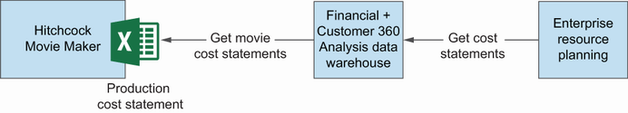
S09 - Hitchcock and System
Movie scripts data is part of the Hitchcock ecosystem and currently a form of microservice used through the UI. However, this data is not shared outside the system, so it cannot be easily used for purposes other than those envisioned by the Hitchcock system.
S10 - Data Product Canvas
At Messflix, data about the popularity of movies is fetched from the paid World Movie DB via a custom-made UI in Hitchcock and used to decide which productions to make. The data is available through the UI in a form that allows only manual.
The set of questions presented can help teams validate the data product’s value. As a next step, it is worth making a more detailed analysis of the data product, and this is where the data product canvas tool can be used.
A recommended approach is to using a data product canvas as a supplementary tool to product thinking analysis. will apply it to the last two data products: Movie Trends and Cast.
S11 - Data Product Canvas
The data product canvas is a tool that allows the organization to structure the data product analysis. It has the form of a visual table with individual sections on various aspects such as name, description, data product owner, and output ports.
S12 - Information and Cast
Information for the Cast data product is shown in.
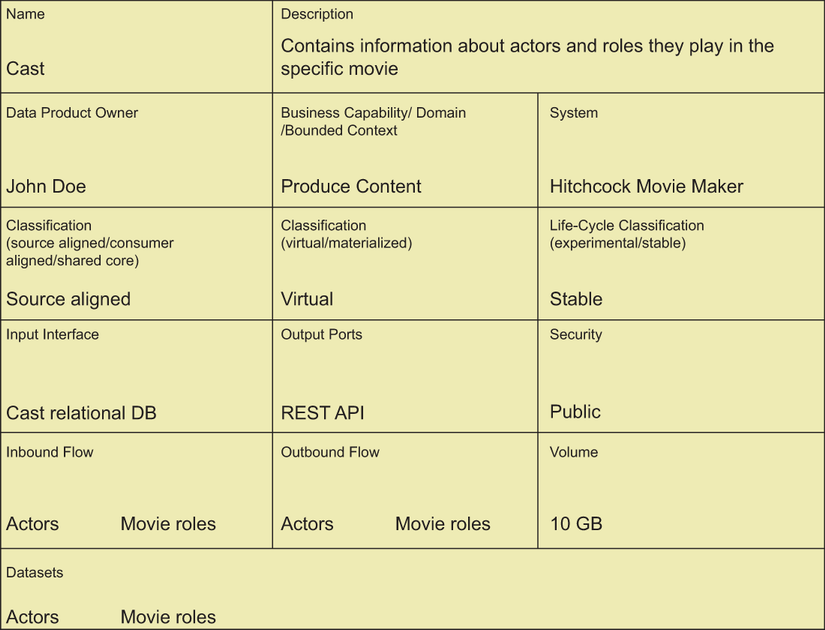
S13 - Data Product Ownership
- Name Data product name.
- Description Data product description.
- Data product owner Information about the data product owner.
- Business capability/domain/bounded context The area to which the data product belongs.
- System The name of the system or systems to which the data product is related.
- Classification The nature of the exposed data.
- Source aligned Data exposed directly from the source system.
- Consumer aligned Data transformed for meeting consumer needs, often from more than one source.
- Shared core Data used by many data products and/or consumers.
- Virtual Data offered to users and computed in the moment of usage.
- Materialized Data first persisted in a final form and exposed to users.
- Lifecycle classification The stage of the data product maturity.
- Experimental The data product is under development.
- Stable The data product is ready to use in production.
- Input interface An interface specifying the data needed from other sources. Its realization uses other systems or datasets to ingest the data.
- Output ports The form in which the data is exposed to consumers.
- Security Security rules applied to the data product’s usage.
- Inbound flow Which dataset comes into the data product.
- Outbound flow Which datasets come out of the data product.
- Volume Estimated size of data offered by the data product.
- Datasets Datasets constituting the data product.
S14 - Data Product Canvas
Information for the Movie Trends data product is shown in.
This product thinking analysis results in the data mesh ecosystem related to the Produce Content business capability shown in.
Having performed the analysis with the help of product thinking and a data product canvas, the definition is five data products. Three are based on Hitchcock Movie Maker data: Production Cost Statement, Scripts, and Cast.
Each product is used by different systems. The script recommender uses Scripts, Cast, Movie Popularity, and Movie Trends to generate automatic recommendations for scripts worth submitting to production.
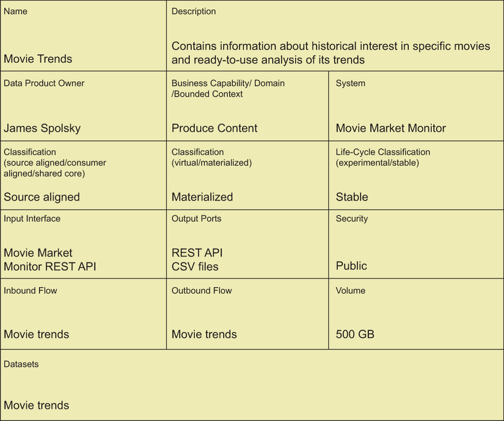
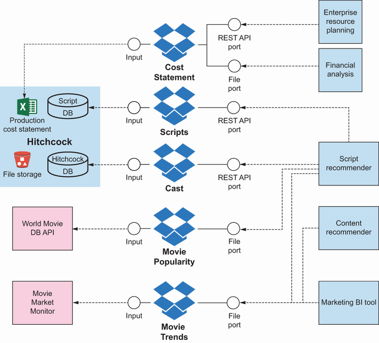
S15 - Product and Conscious
Teams have used the term data product many times so far but haven’t provided its definition. Referring to the generic meaning of a product in general, “an effect of a conscious action,” it is relatively easy to determine what is not a data product.
It was not created with the intention of creating a data product, i.e., no conscious effort was made to prepare it to be a data product.
It does not address clearly defined user needs.
S16 - Product and Definition
The definition is data product as follows.
A data product is an autonomous, read-optimized, standardized data unit containing at least one dataset (domain dataset), created for satisfying user needs.
reviews data products in the Produce Content domain to explain what this definition means in practice.
- Autonomous data unit Every data product is a self-contained system or dataset that can be treated as an independent unit. For example, Movie Popularity is a separate component built in the form of a data lake.
- Read-optimized data unit The form of data storage is optimized for analytical functions. In the case of the Movie Popularity data product, the data is stored in the form of files containing the ranking of movies generated every week.
- Standardized data unit The data product must be prepared in the right way, and must be described with metadata, use standardized protocols and ports for data sharing, and use defined vocabularies and an identifier system. The organization will find more practical examples on this topic.
- Node in a data mesh The data product naturally becomes part of a larger ecosystem by, among other things, posting the appropriate data catalog metadata and allowing it to be used in a self-serve manner.
- Containing at least one domain data set The product must have a dataset that itself has business value. Movie Popularity contains a dataset of movie rankings from a given week, Scripts contains a dataset of metadata about scripts, and Cost Statement contains a dataset.
- Satisfying user needs The data product was created with product thinking in mind, and it has clearly defined users. In the case of Cost Statement, these are accountants who financially control production costs.
- Satisfying user needs The data product was created with product thinking in mind, and it has clearly defined users. In the case of Cost Statement, these are accountants who financially control production costs.
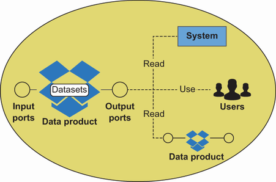
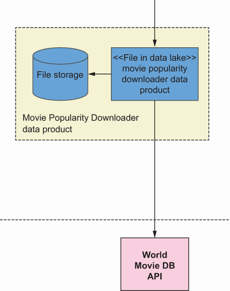
S17 - Product and Term
As the organization already know, the use of the term product in a data mesh is not accidental. It is worth contrasting it with the term project, commonly used to name various kinds of initiatives carried out in organizations.
On the other hand, product thinking makes teams look at a data product from a long-term perspective that goes beyond just making it available. This approach also assumes it has further development, adjusting it based on the feedback gathered from users.
S18 - Metadata Management
What could be a candidate for a data product? In general, any data representation that has value for users can be a good candidate.
- Raw unstructured files For example, images generated by geological sampling equipment or videos uploaded by users of a video portal. However, to be useful to end users, these files should be accompanied by sufficient metadata that describes them.
- Simple files For example, results of a series of measurements taken on geological samples, Excel reports, or data in CSV format exported from the application. In this case, a description in the form of metadata can also be crucial for further use of the.
A dataset inside a database (or data storage in general) —Containing a read-optimized representation of data from a source system (system of records).
A dataset built based on data retrieved from a COTS-type system (commercial, off the shelf) —For example, containing information about stock levels.
- REST API Data exposed from applications to read transactional data, optimized for reading, optionally supporting Hypermedia as the Engine of Application State (HATEOAS) to facilitate automated (machine-consumable) data consumption.
Data stream representing the history of changes to the application —For example, events that relate to changes made within a billing account.
Data stream representing snapshots of data entities from a transaction system —For example, information about a system user.
- Data mart Representing data enabling multidimensional analysis of sales results.
- Denormalized table Containing search-optimized information (for example, about the rentals of a particular movie).
- Graph database Reflecting complex relationships between data (for example, specialized for finding movie recommendations).
Local data lake or part of a bigger data lake —Used to build a view used as a basis for analysis of watching movies statistics.
- MDM-type database (master data management) Containing an integrated view on system users (personal information, viewing preferences, viewing time preferences, payment information, rating information, etc.).
As It is possible to see from the examples, there are many possibilities. But of course, these are just examples of the data itself, the core of a data product.
S19 - Data Product Ownership
Having specified how to define the scope of a data product, its customers, and its business needs, teams will now take a closer look at the human side of a data product—the roles that are responsible for its development. And these are as follows.
- Data product owner The person responsible for the business vision and evolution of the data product. In practice, this can be a person who is also an Agile product owner or a product manager.
- Data product development team A team responsible for implementation, maintenance, and deployment of a data product (in contrast to a central team specialized in data processing).
returns to the Messflix example. The Hitchcock system is developed by two teams, Orange and White, together comprising approximately 30 people.
The introduction of data products changes the system landscape and requires a slightly different organization of teams. Following the principle of domain ownership, teams want to make operational teams responsible for data products related to their applications.
Data products related directly to the Hitchcock system will be led by one data product owner, and data products related to the script recommender will be led by a second data product owner. In the s, examines the characteristics of.
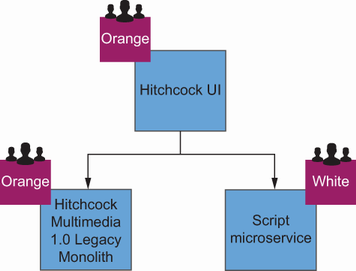
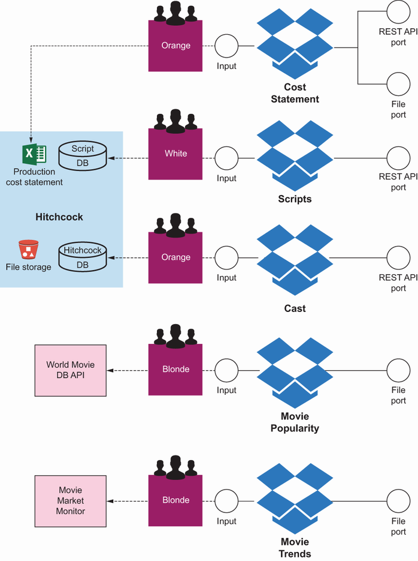
S20 - Data Product Ownership
The role of data product owner is a natural consequence of the data as a product principle. Data is becoming such an important resource in the organization that it requires an owner, a person who will think long-term about how to make data even.
An example of such a need might be to extend the data provided with attributes not previously available (e.g., an additional column in the database). Another example could be adding the ability to retrieve data from any point in time, providing a new way.
The preceding examples show that a data product has a life cycle, and that new user requirements need to be managed in a sustainable way. Moreover, having gathered the needs, it is necessary to decide which ones should be addressed first, and which should.
The role itself is borrowed directly from Agile methods such as scrum. Detailed practices and heuristics can be found in sources describing these methods.
The role of data product owner is extremely important, because the manner in which this role is performed will largely determine the success of implementing the data mesh approach. If assigned data product owners strategically develop products and ensure that they are of adequate.
S21 - Governance Model
The data product owner, as the name indicates, should be the owner of the data product. This person has the last word in making decisions and setting the direction of data product evolution.
- Defining vision and needs Determining the purpose of creating a data product, its users, and their expectations (e.g., using the methods of product thinking).
- Strategic planning of product development work Creating the roadmap, defining key performance indicators (KPIs) for the data product, and ensuring appropriate SLAs.
Ensuring that all requirements for the data product are satisfied— Providing a satisfying level of metadata description, as well as compliance with accepted standards and data governance rules.
Making tactical decisions related to the management of the data product backlog— Prioritizing requirements, clarifying requirements, splitting stories, and approving implemented items.
- Stakeholder management Gathering information from users and management, and clarifying inconsistencies or conflicting requirements.
- Collaboration with the data product development team To clarify requirements and make decisions on problems that may affect the further development and implementation of the data product.
- Participating on the data governance team To influence the introduction of rules in the organization and provide feedback on their practical implementation.
An important rule is that there should be only one data product owner for a specific data product. However, many data products can be owned by one data product owner (if data products are smaller or require less attention).
Teams have to be aware that data products differ in size and complexity, so specific data product owner responsibilities will also differ depending on the situation. For example, someone taking care of dozens of financial spreadsheets will have other challenges and responsibilities than a.
S22 - Data Product Ownership
Like the role of data product owner, the idea of a data product development team is borrowed from Agile methods. This cross-functional team works within the domain to which the data product belongs.
- Orange The team responsible for the backend and UI of the Hitchcock system, and the Cast, and Cost Statement data products. In this team, teams need the most diverse competencies: software developers, software testers, user experience (UX) specialists, system analysts, and data engineers.
- White The team responsible for the scripts microservice and Scripts data product. In this case, the situation is quite simple, because the data product will be exposed in the form of a REST API, and it will be just another representation of already available.
- Blonde The team responsible for the scripts recommender app, and the Movie Trends and Movie Popularity data products. In this case, the analytics application and related data products are planned for development, so teams need a development team supported by data engineers, data analysts.
As It is possible to conclude from the previous examples, the team consists of people who have all the competencies to create a data product end to end. Such a team has characteristics similar to DevOps or DevSecOps teams found in the software development world.
S23 - Data Product Interfaces
- Operations engineers For infrastructure, CI/CD configuration, and integration with the platform.
- Software developers For more complex programming tasks, if required (e.g., exposing data in a specific REST API HATEOAS format).
S24 - Security and Privacy
- Data analysts To acquire and analyze the data that is to be the content of the data product.
- Security engineers To configure security rules related to the data product.
This is a sample list. The competencies associated with the roles are the most important, not the roles themselves.
S25 - Data Product Ownership
Quite naturally, the question may arise: how do the roles of product owner and data product owner relate to each other? In the case of the Hitchcock system, script recommender, and associated data products, the product owners will also be the data product owners.
In general, however, this configuration depends quite significantly on the specific situation. It is possible to distinguish between the three situations shown in.
Now that teams’ve defined the data product and selected skilled people, It is possible to focus on design and architectural aspects of creating a data product.
S26 - Data Product Team Structure
teams showed how to validate and define a data product, and how to assign a product owner along with a data product development team. focuses on a high-level view of the data product structure from the perspective of.
In, showing data products in the Produce Content domain, the key elements of the data product’s external architecture were presented: external and internal ports. An excerpt for the Cost Statement data product is shown in.
To be fully functional, a data product requires more components to become an autonomous element of the architecture. It is advisable to consciously design the entire set of interfaces that will make up the full data product.
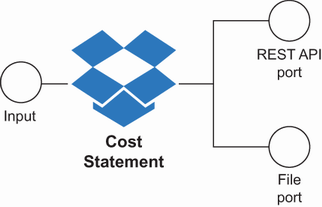
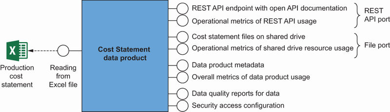
S27 - Data Product Interfaces
- REST API endpoint with OpenAPI documentation API that will allow consumers to directly use the data.
- Operational metrics of REST API usage REST API metrics, such as the number of active users, amount of data retrieved, and number of requests processed.
S28 - Data Product Interfaces
- Operational metrics of shared drive resource usage Metrics from the file-sharing system, including active users count, number of downloads, and number of requests processed.
- Data product metadata Information describing the data being shared, such as business description, contact persons, and responsible persons.
- Overall metrics of data product usage Metrics that are the sum of the metrics from individual ports.
- Data quality reports for data Reports on the quality of the data provided, such as information about the time of the update and any data gaps.
- Security access configuration A tool for setting up access to data, mainly exposed for a self-serve platform.
The generalized external architecture of the data product is shown in.
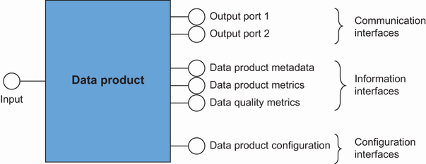
S29 - Data Product Interfaces
- Communication interfaces Input interfaces and output ports, which define the format and protocol in which data can be read (e.g., files, API, database, and stream).
- Information interfaces Interfaces that can be used by users to monitor and retrieve additional information such as metadata, lineage, current metrics, or quality indicators.
- Configuration interfaces Interfaces, mainly platform specific, that enable the data product to be included in the data mesh ecosystem (e.g., security options and parameters, data sharing agreement statements).
Specifically, the self-serve platform uses configuration and information interfaces to configure, catalog, monitor, and visualize the relationships between data products. Interfaces must be standardized for the interoperability to be possible.
In the next subsection, will take a closer look at external ports, which are the data product’s primary means of exposing data.
A data product is created with the end user in mind, and as teams know, users have different needs and preferences. For example, a data scientist might prefer to have data about movies rented in Latin America in the form of a well-described file.
A data product is not only a form in which data is stored but also the various ways that data can be accessed. In the case of a data product, teams call these ports.
A data product can have one or more output ports, and the infrastructure should make it easy to expose the same data using different forms. Next, presents examples of output port representations.
S30 - Data Product Interfaces
One of the primary ports that will come into play when developing data products is database-like storage, i.e., SQL databases, NoSQL databases, or data warehouse data marts. In many cases, this may be the only type of port provided by a data product.
This type of storage can be queried with SQL language or its analog, giving basically unlimited possibilities of further processing. But, of course, they are addressed mainly to technical users who can work with this type of storage and use SQL language.
S31 - Data Product Interfaces
The second type of port, which will be familiar to less technical users of data products, is files that can be imported into tools such as Excel, Google Sheets, or used by data scientists. It is worth remembering that data engineers often feel confident.
Files, in the case of smaller sets, can represent the whole dataset. And for large amounts of data, in most cases, a subset of the data will first be selected, through an appropriate query or configuration of various filters and then exported to a.
Another type of port is the REST API. This material uses HTTP REST here as an example of the protocol that is most popular at the time of writing this material.
This type of port is mainly suitable for working on small subsets of data, because it is usually inefficient for large collections. If teams add GraphQL support to this type of port, teams get the ability to perform complex and customized queries on the.
So this port is great for automating data processing and for relatively low-intensity analytics that do not require large amounts of data.
S32 - World and Streams
By streams, teams mean messaging-based systems that store information as single messages (e.g., message queues). This type of port is not very popular in the world of data yet, especially as a form of sharing data, because tools for its analytical processing are.
The second reason to consider streams in the data world is to use event sourcing, known from the software development world. Event sourcing stores the changes associated with an entity (e.g., a transaction) rather than the final state of the entity.
It is worth noting that a stream can also be used to implement a data product—to transport the data needed to build the data product. However, it’s then considered an input interface.
S33 - Port and Last
The last example of a port is a visualization: various kinds of charts and dashboards representing data. They can be a good resource for nontechnical users, especially if they are combined with a filtering and data selection mechanism.
Having decided which kind of port representation to use, It is possible to focus more on detailed design of a data product.
S34 - Data Product Team Structure
While the external architecture is fairly self-explanatory and easy to standardize, the internal architecture of a data product will depend significantly on the specifics of the data product, the way it is processed, and the technologies used.
The data related to production costs comes from spreadsheet files, which are constantly updated by the production team according to the established rules. To enable more complex analysis of this data, it is made available in the form of a REST API and files.
These scripts read the current form of spreadsheet files, save them in their raw form, and then perform data cleaning and transformation to the target form, which is written to the database used by the REST API and files located on the shared drive.
s describe the main elements of the data product’s internal architecture.
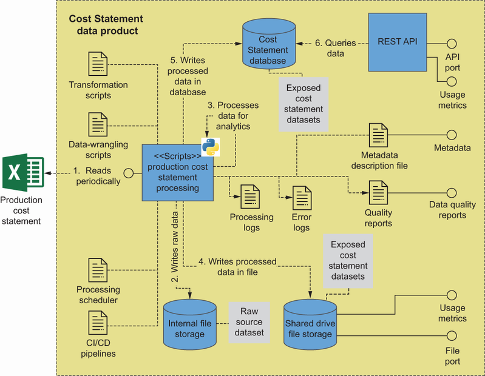
S35 - Product and Dataset
One of the most obvious components of a data product is the dataset. Datasets are what ultimately constitute the essence of a data product.
For example, the dataset may be a remote file whose size or legal aspects prevent copying. In particular, the latter may be the case when, because of licensing, the file can physically reside only within the boundaries of a geographical region.
S36 - Metadata Management
In the data mesh approach, metadata plays a particularly important role that allows many processes to be automated. Much of the metadata, especially descriptive and configuration metadata, will be part of the internal implementation of the data product—that is, its name, business description, dataset.
S37 - Product and Important
An important part of data product implementation will be the parts of the code that enable creation of the final product, including, among other things, the following.
S38 - Pipelines and Infrastructure
- Transformational pipelines ETL or ELT transformations, enrichment, and harmonization.
- Infrastructure as code Configuration of the container and orchestration infrastructure layers.
- CI/CD pipelines Processes that update the data product code after changes, verifying its correctness, and applying the changes to the production environment if the entire process went correctly.
S39 - Product and Following
teams looked at designing the data product;, discusses ensuring that it is prepared to be used in the data mesh ecosystem.
A data product should have the following characteristics.
It can be found.
It must be described, named, and registered in the data product registry.
It can be understood.
It has sufficient technical and domain descriptions for the user to inter- pret it.
It can be uniquely identified in terms of sources from which it originated to build a data lineage (understanding where the data comes from).
It can be addressed.
It has a unique address that can be used to identify the data product.
It can be accessed only by authorized entities.
It can be used.
It has sufficient data to be used on its own (i.e., carries sufficient domain sense on its own).
It is possible to combine it with other data; it has metadata and references that allow the organization to combine several data products into a larger whole.
It is accessible through publicly known and available protocols and tools.
It is possible to tell its availability and quality through metrics, user feedback, and quality reports.
The data product has to meet many criteria to be a full-fledged product. Metadata, which is described in the following paragraphs, plays an especially important role in this regard.
S40 - Metadata Management
The data product should contain all the information to understand and use it. This characteristic is achieved through an appropriate set of metadata.
In classical data management approaches, metadata is often separated from the dataset and tends to be scattered in many places. One of the fundamental properties of a data product is its autonomy.
S41 - Data Product Ownership
Metadata is data about data. It is mainly used to provide additional information about the data so that it is easier to understand and use with greater understanding.
Of course, this is only an example of metadata related to semantics. However, there can be many more types of metadata.
The following is a list of some of the most relevant data product metadata types. In fact, this is not a closed list.
- Business metadata Describing information about the owner (data product owner), describing the domain context (e.g., abstract, assumptions), domain affiliation, organizational unit, license type, and expiration date.
- Technical metadata About the technical team responsible for it, physical access method, links to the data product page (if any), and links to download examples.
- Operational metadata Description of ports, description of access policies, and how to obtain extended access.
- Physical schema Description of the data product, its attributes, data types, constraints, and relationships to other elements.
- Semantic metadata Links of the physical model to standardized vocabularies and logical models.
- Local lineage Information about the direct sources of the data from which the data product was created.
- Full lineage Information about the overall sequence of links that shows how data was created in a given data product.
- Quality metrics Metrics related to data quality, the amount of correctly and incorrectly defined data, information about missing data, incorrect formats, and compliance with data governance rules.
- Operational metrics Information about whether the data product is available, number of users, usage statistics, and SLA metrics.
S42 - Metadata Management
In classical approaches to data management, metadata is gathered in dedicated tools, most often in a data catalog, where the submitted dataset needs to be enriched with additional information. In this way, metadata is separated from the dataset, which often leads to metadata descriptions.
The data mesh approach assumes that the data product is autonomous and self-described, in a way that the self-serve platform and end users can use it for different purposes. Therefore, it is recommended to use the metadata as code approach, which results in data.
For example, a metadata description can be implemented using JSON notation. The data product’s metadata description file contains sections dedicated to each of its aspects.
S43 - Details and Domain
// data product details.
// domain dataset details.
// dataset schema details.
// conceptual domain model eg. OWL / RDFs.
// data quality guarantees.
// runtime generated metrics.
// links to related documentation.
examines take a look at examples of metadata related to a data product.
S44 - Metadata Management
Metadata about a data product is mainly descriptive so users can better understand its business sense and get information for further use. It is possible to include data such as the following.
S45 - Product and Description
- Title Human-friendly name of the data product.
- Business description Domain-specific description of the data product, introduction to the domain context.
- Terms of use Licensing type, and description of when, how, and by whom the data product can be used.
S46 - Data Product Ownership
- Data product owner Information about the responsible person, such as name, surname, and position as well as contact details.
- Responsible data product developer team Information about the technical team maintaining the data product, including the technical support contact.
S47 - Status and Collected
- Status Current status of the product (e.g., experimental, active, inactive, or temporarily off).
- Since when collected The moment in time when data starts to be collected, not necessarily equal to the time when data starts to be exposed.
S48 - Metadata Management
- Last modified The last modification to the product (e.g., a changing data schema for underlying data).
Of course, these are just a dozen or so examples of elements that can be freely adapted, as well as adding others that are important in the context of a given organization. An example snippet of metadata defined in JSON format could look like.
S49 - Metadata Management
"title": "Movie Production Cost Statement".
"Cost breakdown of a production including. (much more text)".
"name": "For internal financial related use only".
As It is possible to see, much of the data included is dictionary-like and should come from standardized dictionaries, especially if the organization wants to be FAIR compliant. A separate topic is human-friendly support for creating this type of metadata.
Many data product owners may not be comfortable working with a format like JSON. Even if it isn’t a problem, it can be inconvenient.
S50 - Metadata Management
While the data product description is business oriented and different from technical details, the domain dataset part focuses on exactly that aspect, as shown in listing 5.3. This part of the metadata may include, among other things.
S51 - Data Product Interfaces
- Ports Specification of available ports.
- Name Machine-friendly name of the domain dataset.
S52 - Download and Version
- Download URL Address to download sample of the data.
- Version The latest version of the dataset.
S53 - Description and Described
"title": "Movie Production Cost Statements".
"description": "More detailed description of the ".
Having described the most important parts of a data product, examines focus on additional aspects that can be described.
S54 - Metadata Management
The data product and domain dataset metadata are just the tip of the iceberg. According to listing 5.1, analogous metadata description sections should appear for terminology, lineage, conceptual model, security, and data quality.
One such source is a set of World Wide Web Consortium (W3C) standards that can be used directly or adapted to the needs. Teams do not describe these sections in more detail, because their specific use depends on the context of the organization.
Although teams’ve defined the main requirements for a data product, there are several additional characteristics to consider when making guidelines for creating data products in a particular organization., examines five of these characteristics.
S55 - FAIR Principles
Teams will first focus on FAIR (an acronym for findable, accessible, interoperable, reusable ). This set of principles was initially designed for scientific research data, to maximize its reusability and its ability to easily integrate with other data.
However, over time, it became clear that FAIR could be helpful in other situations. For example, government agencies in Australia, Sweden, and the European Union, among others, recommend its use for shared data.
S56 - Metadata Management
Data should be easy to find, and its metadata should be easy to use by both humans and computers. In particular, the ability of machines to interpret metadata is crucial from the perspective of FAIR.
(Meta)data is assigned a globally unique and persistent identifier.
Data is described with rich metadata.
Metadata clearly and explicitly includes the identifier of the data it describes.
(Meta)data is registered or indexed in a searchable resource.
As an example, take a look at the following listing to see a simple REST API returning Person data. (This example can be used to see how to apply FAIR to other interfaces in order to access data like databases, files, and messages.).
S57 - Metadata Management
The data itself is nothing special. The more important part lies in metadata that could be like the following listing.
"description": "Person data represents.".
//. other metadata.
S58 - Metadata Management
ID of the person instance in listing 5.4.
Data is described by rich metadata (principle 2) that It is possible to observe in listing 5.5. This information can include name, title, description, and schema details.
S59 - Principle and Product
Referenced ID in listing 5.5.
Principle 4 tells teams to put this (meta) data in some kind of searchable repository where data catalogs can be successfully used.
According to the characteristics described earlier, virtually all four principles are consistent with the essential attributes of the data product. Therefore, only the first principle imposes very strong conditions on the data product.
S60 - Metadata Management
For the data found, there should be clear rules for accessing the data. The metadata should clearly describe how to access the data, and the protocols used to access the data should be generally known standards.
(Meta)data is retrievable by its identifier using a standardized communications protocol.
The protocol is open, free, and universally implementable.
The protocol allows for an authentication and authorization procedure, where necessary.
Metadata is accessible, even when the data is no longer available.
As shown the data product has an ID in the form of the URL https://dp.meshflix.com/93384349834. According to principle 1, this should be a workable URL that can be used to retrieve information about the data product.
These accessibility principles can be seen as recommendations for creating a data product and its desirable features to facilitate its use. In particular, the permanent availability of metadata is essential if there is a need to refer to historical data (e.g., for legal reasons).
S61 - FAIR Principles
According to FAIR, data should be easy to integrate with other data, and therefore should be defined so that data in other data products, vocabularies, and ontologies can be referenced. In this case, FAIR proposes three principles.
(Meta)data uses a formal, accessible, shared, and broadly applicable language for knowledge representation.
(Meta)data uses vocabularies that follow FAIR principles.
(Meta)data includes qualified references to other (meta)data.
To make data interpretable by others, teams have to describe the data model. It is advisable to use a well-recognized language, such as Resource Description Framework (RDF), OWL, JSON-LD, or Schema.org (principle 1).
This is also an example for principle 3, as teams refer to external definitions in the form of a fully qualified reference (“uri”: “https://ref.meshflix.com/generic/123393ed34”). Beware that in the provided example the custom-created gender enum is used, but teams could also use https://schema.org/gender alternatively for.
If teams want to go beyond a single data product to perform more complex analyses, teams must have the appropriate means to do so. The previous FAIR principles are quite demanding because they significantly expand the amount of information that needs to be provided.
S62 - FAIR Principles
The last point of FAIR focuses on data reusability, or the ability to apply the same data in different contexts. The principles associated with reusability are as follows.
S63 - Metadata Management
(Meta)data is released with a clear and accessible data usage license.
(Meta)data is associated with detailed provenance.
(Meta)data meets domain-relevant community standards.
Principles 1a and 1b could be achieved by having some additional entries in metadata, as in the following modified listing.
S64 - Metadata Management
//. other metadata.
"name": "For internal use only".
Here termsOfUse specifies a license for data usage, and sourceDataProducts specifies information about provenance (shortened for the sake of simplicity). The implementation of principle 1c would require using standardized domain-specific terminology and vocabulary—for example, www.iso.org/standard/53798.html for geographic information and services, and http://cfconventions.org for climate.
These principles focus on defining clear rules for using data (by providing licenses), provenance information, and recommending standards that apply to the domain. Subsections 1a and 1b are essential components of a well-structured data product.
If the organization is interested in more details about FAIR implementation, see the initiative site at www.go-fair.org.
S65 - FAIR Principles
FAIR can be an excellent addition to the essential criteria for creating a data product. Another critical aspect to consider is the mutability of the data provided by the data product.
If, for example, decisions about ingredient proportions in a drug have been made based on the analysis of scientific studies, then getting to that unmodified source data may be necessary from a regulatory perspective. Therefore, data immutability should be a desirable characteristic of a.
S66 - Immutability Tradeoffs
One of the primary goals of introducing a data mesh is to democratize data by enabling access to the various data created within the organization. Not all data created in organizations is created with the same consumption patterns in mind (consumption of data from.
Despite the lack of immutability, data should be generally available as it is, especially in the context of data generated by transactional systems (e.g., read-only APIs based on command query responsibility segregation, or CQRS, architecture). Therefore, teams treat immutability as a desirable feature of.
S67 - Data Product Canvas
recalls the Cast data product teams’ve seen on the data product canvas. Take a look at.
Imagine that John Doe builds this data product and that several teams start to consume it. A couple of months go by, and John Doe sees a decent amount of traffic on his data product.
One day, he takes extra time and calls up a few of the downstream consumers of the data product. They tell him they are making a lot out of the Actors part of the data product.
So he asks the consumers. The answer is shockingly simple: “Yes, teams would really like to use the Movie Roles dataset, but the organization’re providing them in a custom format teams’re not able to process further.”.
A frustrated John goes on to iterate on his product, to incorporate a format the consumers can use. That’s how product thinking works, right?
The reason is that consumers and producers of products enter into a mutual relationship. Company-internal product consumers, especially in the data realm, sometimes forget that.
The product producer has responsibilities. The producer must properly care for the product and make decisions in the best interest of the product.
The product consumer has responsibilities. The consumer must tell the producer what’s wrong, what’s good, and what’s missing.
This mutual relationship sometimes gets lost inside the company context even though it is natural outside of it.
Data contracts and data-sharing agreements are still largely topics of ongoing discussion, but they seem to emerge as one possible tool to foster this mutual consumer- producer relationship. Teams discuss these options next and then outline how to get started with them.
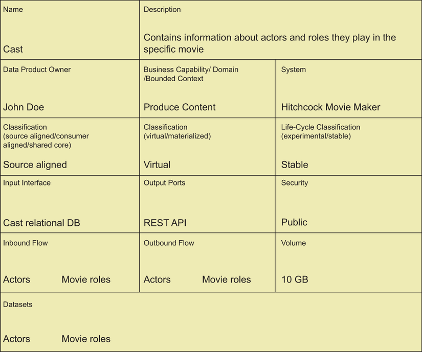
S68 - Data Contracts
Piethein Strengholt describes data contracts as delivery or service contracts (see “Data Contracts—Ensure Robustness in The Data Mesh Architecture,” http://mng.bz/gwnE ). If teams look at the preceding Cast data product, a data contract could include information like this.
This is a production-level dataset.
The dataset is checked for broken records and does not contain test data.
The interface delivers the data within one second inside the company network.
Teams guarantee 95% uptime.
The roadmap includes a couple of new datasets to be released over the next few months.
The data product is currently in version 1.0.10.
This material uses semantic versioning. That means a bump to 1.0.
The schema of the data and any additional metadata.
A data-sharing agreement extends on this data contract. While the data contract is still heavy on the data-producer side, the data-sharing agreement specifically targets consumers.
The goal of sharing this dataset is to enable consumers to inject insights from the actor and role combination into other services. These might be other data products or not.
The datasets are intended to be used together, using the standard combination mechanism of the common actor identifier to join, as is common at Messflix.
Since the data is to be used across a wide variety of services, the goal is to have it available publicly, including the actor names, which should be fine with the security level.
Since a lot of consumers want to analyze data historically, the data will be available with a backfill of three years.
In this agreement, It is possible to spot a lot of collaboration and intention of usage by the consumers. This agreement helps the data product owner John Doe design the data products well from the start.
now take a look at how Messflix as a company could help to implement such data contracts and sharing agreements across the data mesh.
S69 - Data Contracts
Data contracts and sharing agreements, like the two outlined in the preceding section, can seem daunting to implement. They need to be stored somewhere, possibly have an automatic way of checking them, and must be up-to-date.
Therefore, a recommended approach is to a practical step-by-step approach. In the eyes, the most important part to get started is to kick off the discussions between data producers and consumers.
Messflix already has an MVP of a self-serve data platform and a few data products, including a basic data catalog. The base work is there, and some data products are as well.
Inspired by the article by Strengholt, the Messflix federated governance body decides to use of a simple web form that can be filled out. This basic data contract is filled out by the data producer of the product.
The output of step 1 should be that data producers get into the habit of collecting requirements, as discussed at length. Data consumers also are getting used to talking to producers.
Once the data mesh grows and people get into the habit of communicating, it’s time to integrate the data contracts and agreements with all the metadata in the data catalog. Messflix can take this step, after it has a GUI available for data producers.
The output of step 2 should be an integration of the contracts and agreements into the daily work of every participant.
Start to automate parts of the contract and agreement processes. This might mean that Messflix has a simple way of providing access policies via the GUI or that Messflix calculates standard metrics for the data products that can be compared to SLAs.
The output of step 3 should be that the contracts and agreements feel easy to use and add a benefit to the participating parties.
As It is possible to see, with step 3, the implementation and automation blend together with the data catalog. Once the cultural shift is in place, mutual collaboration kicks in and becomes a natural part of the self-serve platform and its roadmap.
teams presented tools and techniques to describe a data product so that it can be understood by others (metadata) and used to connect to other data products (FAIR principles). As It is possible to see, creating a useful data product requires a well-thought-out.
Although teams’ve showed how to design and craft a data product, creating an ecosystem of data products will require standardization of rules for creating and describing those data products, which will be the responsibility of the data governance team. It will also be required.
S70 - Product and Treat
To make data valuable, It is advisable to treat it as more than just an asset.
To treat data as a product, teams apply product thinking to it.
Data products should be created with users in mind.
A data product should address clearly defined user needs.
A data product is an autonomous, read-optimized, standardized data unit, a node in the data mesh architecture, containing at least one dataset (the domain dataset), created for satisfying user needs.
The data product owner, with the data product development team, is responsible for creating and maintaining the data product, optimizing its usefulness for users.
Data product data is accessible through one or more ports.
A data product exposes information interfaces to make it findable and understandable outside the context of its creation.
A rich metadata description enables data discovery and reusability.
FAIR principles can be a well-defined base for standardizing data product descriptions.
Key takeaways
- What data as a product means in terms of value, users, and quality.
- How product thinking shapes priorities and evolution of data products.
- How key roles operate: data product owner and cross-functional product team.
- How to design interfaces and output ports for real consumption needs.